② 球道法向截面
球道法向截面是指垂直于钢球中心轨迹圆弧切开的球道横截面。本组参数直接决定了球道槽的几何形状、钢球与球道的接触状态以及精加工/半精加工余量。
1. 截面类型 (section_type)
- 可选项：
椭圆/双圆弧/点表(CSV) - 默认值：
椭圆 - 参数含义：选择球道法向截面的几何曲线类型。
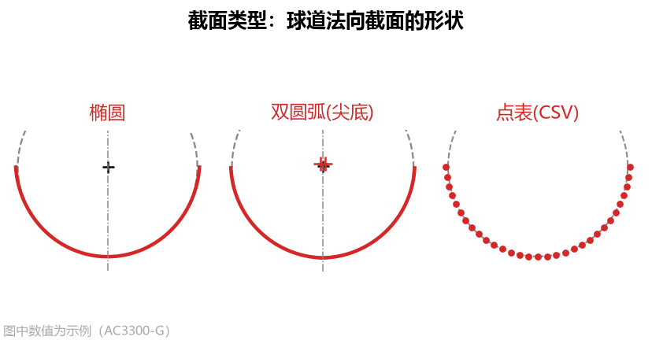
- 三种类型对比与选择依据：
- 椭圆：标准椭圆截面，椭圆中心位于截面对称轴上。这是球笼式万向节星形套最常用的球道形式，既能保证良好的接触应力分布，又非常适合使用单圆弧近似刀具加工。
- 双圆弧：又称哥特式（Gothic）尖底圆弧截面，由左右两段等半径 的圆弧交叉而成，两侧圆心交叉到对称轴另一侧，球道底部交汇形成一个微小的尖点棱线。
双圆弧截面的三种刀具方案：由于双圆弧截面在底部存在折角尖点，其精确刀具接触段带有“凸转凹”拐点，普通的单圆弧“拟合精确廓形”无法贴合。为此软件提供了三种解决方案：
- 精确自由曲线刀具：直接导出
刀具 DXF或刀具点表 CSV磨制精确样条刀； - 多段相切圆弧刀具（推荐）：在【高级参数 → 圆弧近似】中将
圆弧段数设为2或3段（如内置示例AC10000），用 2~3 段首尾相切的圆弧完美贴合凸凹拐点； - 按审核优化的单圆弧刀具：当现场只能磨制单圆弧刀且球道底允许由尖底适应为圆底时，将
单圆弧求法设为按审核优化，自动求出一把使实际接触角、跨距、顶隙和侧面轮廓均合格的单圆弧刀。
- 精确自由曲线刀具：直接导出
- 点表(CSV)：当客户产品图纸没有给出椭圆或双圆弧参数，而是直接给出一张球道截面坐标点表（如图纸上的
Table 2 Basic Profile）时选用。
2. 定义方式 (solve_mode，椭圆 / 双圆弧模式可见）
- 可选项（随
截面类型自动切换）：- 当选
椭圆时：给定相似度/给定顶隙/给定半轴 - 当选
双圆弧时：给定相似度/给定顶隙/给定半径 R
- 当选
- 默认值：
给定相似度 - 参数含义：在椭圆或双圆弧截面下，根据图纸标注的已知条件选择截面的定义方式（软件会自动只显示对应的输入框，其余作为结果算出）。
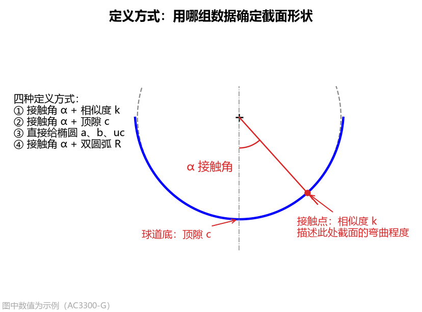
- 四种定义方式设置指南：
- 给定相似度（椭圆 & 双圆弧通用）：图纸给出了接触角 和相似度 （或椭圆接触点处的曲率半径 ）时选用。此时软件自动算出顶隙 （以及椭圆半轴或双圆弧半径 ）。
- 给定顶隙（椭圆 & 双圆弧通用）：图纸给出了接触角 和球道底顶隙 时选用。此时软件自动算出相似度 。
- 给定半轴（仅
椭圆可选）：当图纸直接标出了椭圆的横向半轴 、径向半轴 和中心高 时选用；此时接触角 、相似度 、顶隙 全部由软件自动算出。 - 给定半径 R（仅
双圆弧可选）：当双圆弧图纸直接标出了接触角 和两段圆弧的半径 （例如AC10000图纸标出 、）时选用；此时软件自动算出相似度 、交叉圆心坐标和顶隙 。
3. 接触角 α (pressure_angle)
- 单位：
°（度） - 默认值：
42.0 - 可见条件：
椭圆（给定相似度/给定顶隙）或双圆弧（全部三种定义方式）下可见。 - 参数含义：钢球与球道侧面接触点处的法线，与截面对称轴（球道深度方向）之间的夹角，图纸上也常称为压力角（Pressure Angle）。球道截面在该角度方向上与钢球精确相切。
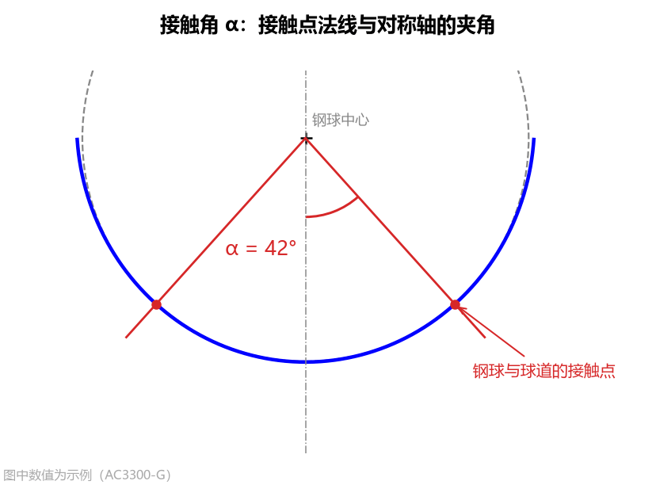
- 设置方法：按零件图纸标定的名义接触角填写，常见范围为
30° ~ 45°（例如AC3300-G与AC10000为42°，AC0706-E为36°，Nexteer为33°）。若图纸给出了接触角公差带（如42° ± 3.5°），可在【高级参数 → 校验范围】中同步填入接触角下限和接触角上限。 - 对结果的影响：接触角 越大，钢球与球道的接触点越靠近球道开口边缘，接触角跨距 越大，刀具齿形变化越显著。
4. 相似度 k (conformity)
- 单位：无量纲（比值）
- 默认值：
1.04 - 可见条件：定义方式为
给定相似度时可见。 - 参数含义：钢球接触点处球道截面的弯曲半径（曲率半径 ）与钢球半径（）的比值，也称为密合度（Conformity）。 表示截面与钢球完全贴合； 表示球道曲率半径大于钢球半径。
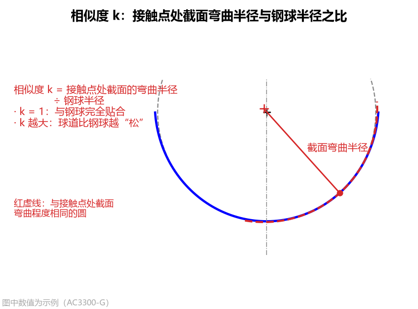
- 设置方法与图纸换算：
- 如果图纸直接标明了相似度（如
1.04、1.035），直接填入即可（常见范围1.01 ~ 1.10，双圆弧截面必须 ）。 - 椭圆图纸标“接触点曲率半径 ”时的换算公式：
注：如果是双圆弧图纸直接标出了圆弧半径 ，无需手动换算相似度，直接将上方
定义方式切换为给定半径 R并填入 即可！
- 如果图纸直接标明了相似度（如
相似度 k 调整前后的效果对比
下图对比了保持其他参数不变，将 相似度 k 分别设为 1.02、1.04、1.08 时球道底顶隙和刀具接触段的变化：
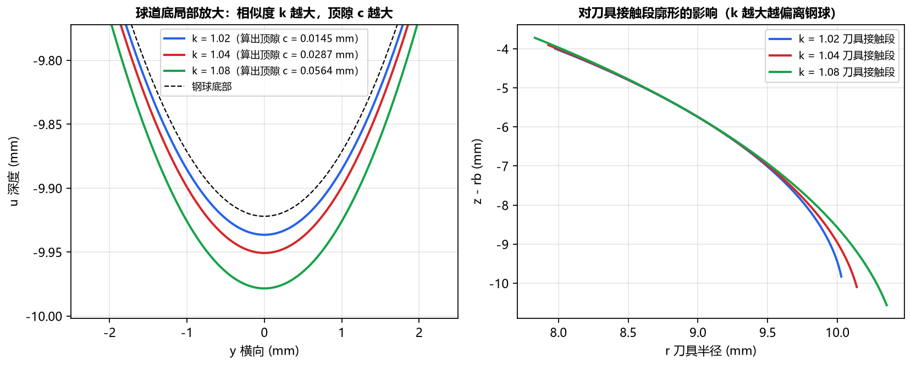
可以看到，相似度 越大，球道相对钢球越“宽松”，算出的球道底顶隙 越大，同时刀具接触段廓形偏离标准球面的程度也越大。
5. 顶隙 c (clearance)
- 单位：
- 默认值：
0.0295 - 可见条件：定义方式为
给定顶隙时，或截面类型为点表(CSV)时可见。 - 参数含义：当钢球与球道两侧面正常接触时，钢球最低点与球道底部之间的径向间隙（即：钢球中心到球道底的距离减去钢球半径 ）。
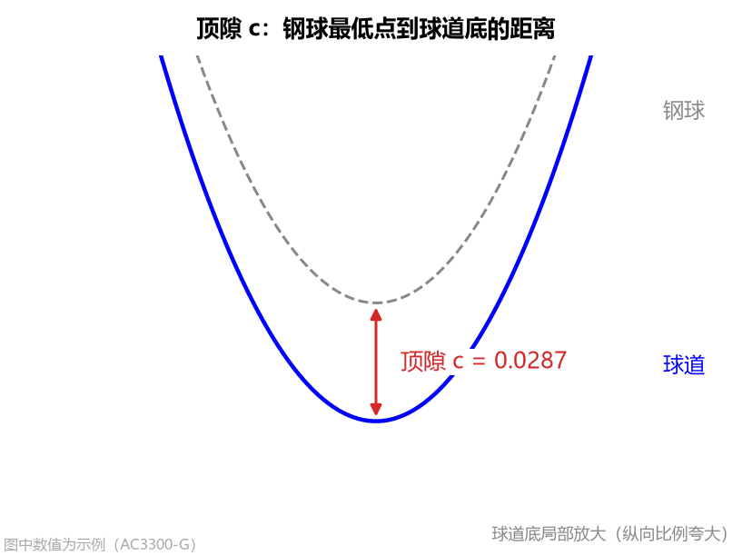
- 在两种模式下的不同作用与设置方法：
- 在“给定顶隙”模式下：它是确定椭圆或双圆弧形状的输入条件（通常取图纸顶隙公差带的中间名义值，如
0.0295），软件据此反算出相似度 。 - 在“点表(CSV)”模式下（极其重要）：由于导入的点表坐标是以球道底为原点（）向上测量的，软件需要用您填写的
顶隙 c来确定钢球中心在点表中的高度（钢球中心距球道底距离 = 钢球半径 + 顶隙）：- 如何填写：请务必按该点表图纸上规定的名义顶隙填写（例如
Nexteer 34205673填0.0101；AC0706-E图纸标出钢球中心距球道底10.7429、钢球半径10.71565，相减得顶隙0.02725）。 - 填错提醒：如果
顶隙 c填得与点表实际几何不匹配，计算结果栏会标红提示钢球未与截面贴合，请核对顶隙/椭圆中心！或钢球与截面干涉！。
- 如何填写：请务必按该点表图纸上规定的名义顶隙填写（例如
- 在“给定顶隙”模式下：它是确定椭圆或双圆弧形状的输入条件（通常取图纸顶隙公差带的中间名义值，如
6. 圆弧半径 R (gothic_r，仅“双圆弧 + 给定半径 R”可见）
- 单位：
- 默认值：
10.32 - 可见条件：当
截面类型 = 双圆弧且定义方式 = 给定半径 R时可见。 - 参数含义：双圆弧（尖底）截面左右两侧圆弧槽壁的半径 。
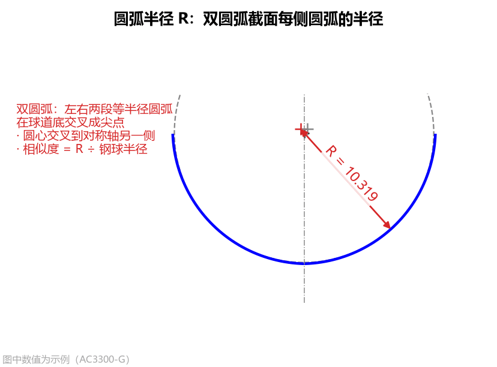
- 设置方法与 геометрические特征：
- 直接按双圆弧零件图纸标注的圆弧半径填写（必须大于钢球半径 ，常见约为钢球半径的 倍；例如
AC10000钢球直径 、半径 ，圆弧半径填10.24）。 - 填入后，软件会自动让左右两段半径为 的圆弧在给定
接触角 α处与钢球精确相切，两侧圆心交叉到对称轴另一侧，并在计算结果栏自动输出对应的相似度（即 ）和球道尖底处的顶隙。
- 直接按双圆弧零件图纸标注的圆弧半径填写（必须大于钢球半径 ，常见约为钢球半径的 倍；例如
7. 椭圆半轴 a、半轴 b 与中心高 uc（仅“椭圆 + 给定半轴”可见）
当 截面类型 选 椭圆 且 定义方式 选 给定半轴 时，直接通过以下三个参数确定椭圆截面尺寸：
（1）半轴 a（横向）
- 单位：（默认
10.18） - 含义与设置：椭圆在球道宽度方向（横向 ）的半轴长度，按零件图填写，通常略大于钢球半径。
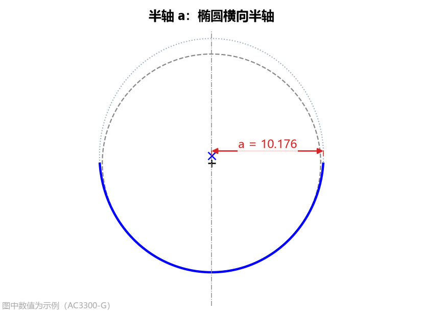
（2）半轴 b（径向）
- 单位：（默认
10.64） - 含义与设置：椭圆在球道深度方向（径向 ）的半轴长度，按零件图填写。 与 的大小关系决定了椭圆截面是偏宽还是偏深。
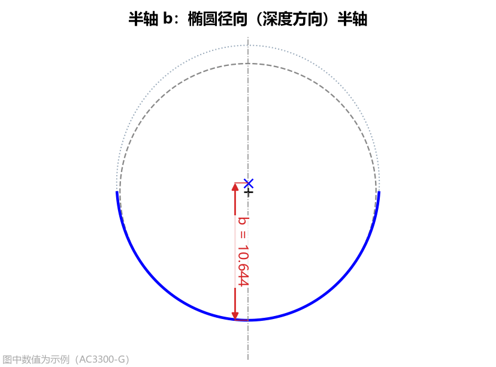
（3）中心高 uc
- 单位：（默认
0.69） - 含义：椭圆中心相对于钢球中心沿对称轴的距离，朝球道开口方向（位于钢球中心上方/离开球道底）为正。
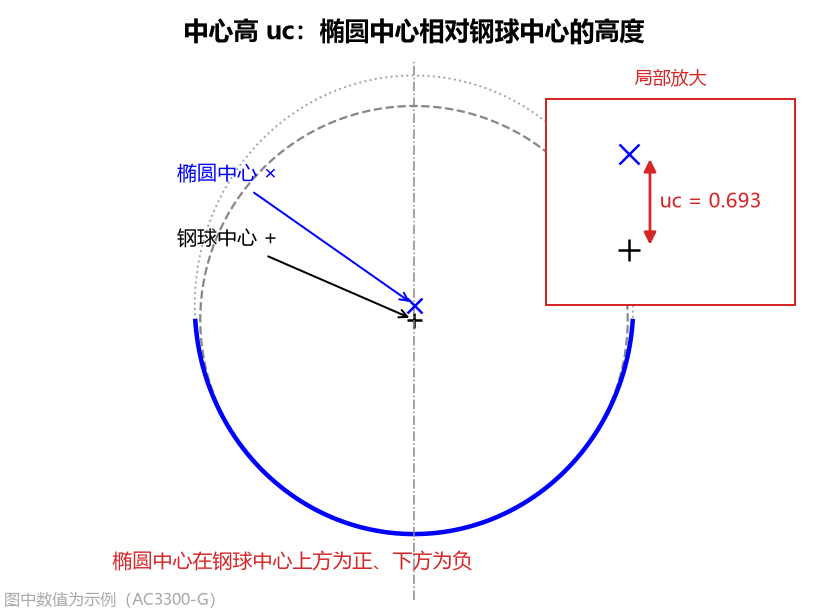
- 设置与换算方法：
- 按零件图换算填写：用椭圆中心到球道底的距离（即径向半轴 ），减去钢球半径和顶隙即可得到
中心高 uc。 - 自动贴合校验：计算后，软件会自动搜寻钢球与该椭圆的接触点；如果 填得不合适导致钢球悬空或卡入椭圆壁面，结果栏会标红提示
钢球未与截面贴合（ 偏小）或钢球与截面干涉（ 偏大）。
- 按零件图换算填写：用椭圆中心到球道底的距离（即径向半轴 ），减去钢球半径和顶隙即可得到
8. 点表文件与点表精度（仅“点表(CSV)”模式可见）
当 截面类型 选择 点表(CSV) 时，用于导入外部坐标文件并控制曲线光顺程度。
（1）点表文件 (points_file)
- 操作方式：点击输入框右侧的
…按钮，在文件对话框中选择球道截面坐标文件（支持.csv、.txt、.dat）。
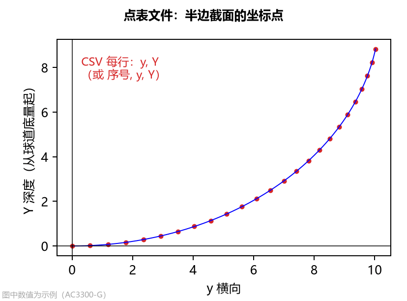
- 点表文件格式要求与智能识别规则：
软件对点表格式具有极强的兼容性，您无需繁琐修改表头即可直接导入：
- 列格式（支持 2 列或 3 列）：
- 两列格式：每行两个数
横向坐标 y, 深度 Y（深度 从球道底量起，朝球道开口方向为正，单位 ）。 - 三列格式（同客户图纸 Table 2）：每行三个数
序号 No, 横向 Z, 深度 Y，软件会自动取最后两列作为(横向, 深度)！因此软件导出的基本轮廓 CSV（Table 2）可以一字不改直接再作为点表导入。
- 两列格式：每行两个数
- 分隔符：逗号
,、空格、制表符（Tab）或分号;均可自动识别。 - 表头与注释：文件中包含的文字表头、空行或以
#开头的注释行会自动跳过（有效数值行不少于 5 行即可）。 - 半边或全截面均可：可以只给右半边（横向 ），也可以只给左半边（，自动镜像翻正），或给完整的左右对称截面。
- 自动归零与补底点：深度方向会自动以最低点归零；如果点表第一点不在对称轴（）上，软件会按偶函数对称特性自动在 处外推补齐球道底点。
- 列格式（支持 2 列或 3 列）：
（2）点表精度 (points_tol)
- 单位：
- 默认值：
1e-05（即 ） - 参数含义：点表坐标数据本身的舍入误差或三坐标测量误差量级，用于对离散点表做样条光顺处理。
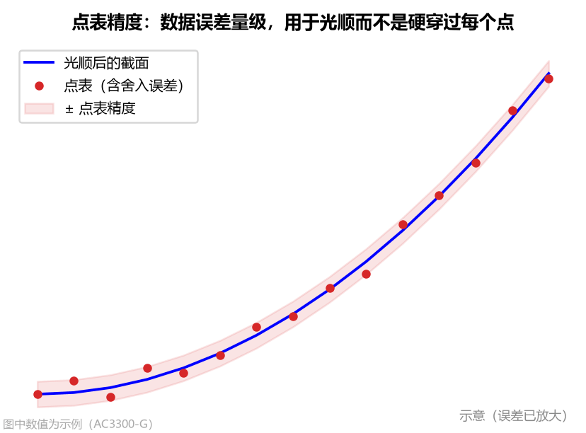
- 为什么要设置点表精度（光顺 vs 硬插值对比）：
图纸上的点表坐标通常只保留到小数点后 4 位或 5 位，存在微小的截断舍入误差。而空间包络计算出的刀具廓形对球道截面的曲率变化极其敏感——如果直接硬性穿过每一个带舍入误差的点（即设
点表精度 = 0），微小的坐标舍入误差会被放大成截面曲率的剧烈抖动，进而导致算出的刀具刃口出现波纹！
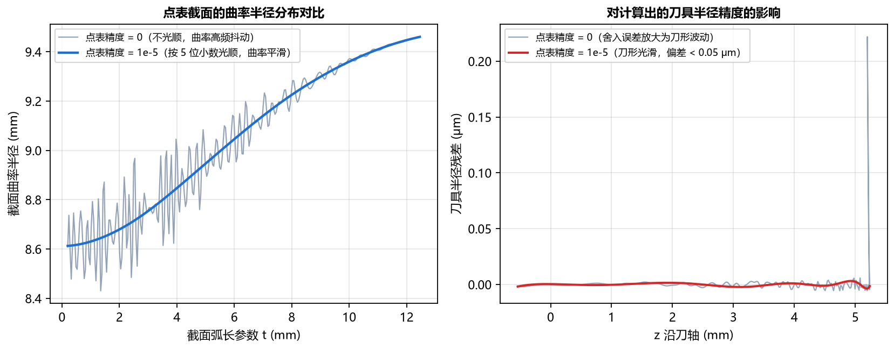
- 设置指南与点表曲率质量自动检查：
- 5 位小数点表（如
0.12287，最常见客户图纸）：保持默认1e-05（或输入0.00001）。 - 4 位小数点表（如
0.1229）：请设为1e-04（或0.0001）。 - 三坐标实测点表：按测量机的实际测量精度填写（如
0.001）。 - 原始点表质量自动诊断：某些客户图纸点表（例如
AC0706-E）在球道底到接触点之间原本缺少加密点、被人工用直线段插值填补，导致原始点表本身就存在曲率反向或明显波动。软件内置了三点离散曲率检测器，若发现原始点表自身存在曲率反向或剧烈起伏，会在计算结果栏明确提示点表在 Z = ... mm 处曲率反向或明显波动（原始点表即如此，非本软件引起），算出的刀具廓形在该段也会相应变形。
- 5 位小数点表（如
9. 法向余量 (allowance)
- 单位：
- 默认值：
0.0 - 参数含义：球道截面沿法线方向（朝球道内部/钢球方向）整体均匀偏置的单边留料量。
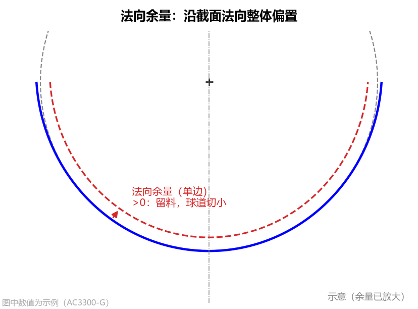
- 设置方法：
- 精加工刀具（一次干到位）：填
0.0。 - 粗加工 / 半精加工刀具（需给后续精密磨削或精铣留余量）：填入正的单边余量值，例如留单边 余量就填
0.15（负值则表示过切多切）。
- 精加工刀具（一次干到位）：填
法向余量对球道与刀具的影响对比
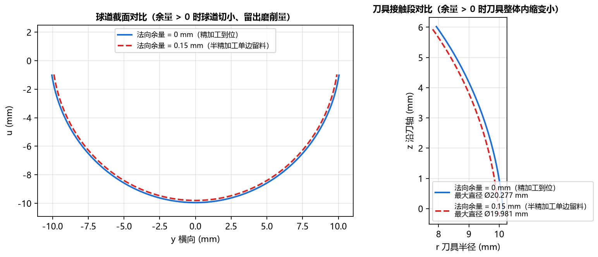
- 当
法向余量 > 0时，加工出的球道槽比最终设计截面小一圈（留出材料），因此计算出的成型刀具半径也相应内缩变小。 - 为了方便您核对图纸，左下“计算结果”面板中显示的
相似度和顶隙始终是扣除余量后的名义设计值，而右侧 球道截面 页签标题会明确标注（含法向余量 0.15）。